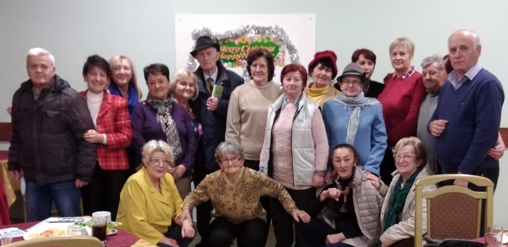

ДОГАЂАЈИ
Ова страница резервисана је за приказ одржаних и најаву будућих књижевних вечери, гостовања на телевизији и промоција књига у организацији Књижевног клуба Покрета трећег доба Србије.
Дружење у Аранђеловцу (27. јануар 2022. године)
Дана 27. јануара 2022. године је у УП Аранђеловац одржан свечани састанак дела чланова Литерарне секције, поводом Савиндана. Поред говорења поезије везане за св. Саву, говорени су афоризми, песма и кратка прича које су похваљене на конкурсу у оквиру Олимпијаде Покрета трећег доба за 2021. годину и које ће бити штампане у Олимпијском кладенцу.
Слике са окупљања можете погледати кликом ОВДЕ.
Дружење у Аранђеловцу (29. децембар 2021. године)
Дана 29. децембра 2021. године одржан је годишњи састанак пензионера, чланова Литерарног клуба, Удружења пензионера општине Аранђеловац. Поред прегледа годишњег рада, извршено је промовисање Књижевног клуба Покрета трећег доба Србије, са намером информисања присутних о његовој сврси и циљевима оснивања, начину учланивања и могућностима које чланство пружа.
Састанак се продужио у Књижевно вече, где су пензионери читали своје радове: поезију, прозу, кратке цртице из живота... Ђуро Милекић, члан Клуба књижевника, песник са више од 40 штампаних књига, промовисао је своју најновију књигу. Све је било праћено звуцима Ћанетове фруле. Чули су се бурни аплаузи, а било је песме, игре, шала, смеха. Срећно и весело у нову 2022. годину. ЖИВЕЛИ!
Све слике и снимке са окупљања можете погледати кликом на слику или ОВДЕ.
Књижевно вече, Покрет трећег доба Београда, Kњижевни клуб Покрета ТДС, Удружење пензионера Савезног МУП-а, Београд (14. децембар 2021. године)
Песникиње: Љиљана Бошковић, Бранка Танасић, Лепа Марић. Афористичари: Митар Ђерић, Мићо Лукић, Живко Кулић.
Афористичко вече, Kњижевни клуб Покрета ТДС, Културни центар општине Медвеђа (28. јул 2021. године)
Књижевник и афористичар Живко Кулић и његови гости: Радосав Додеровић, Владимир Јовановић, Миљан Токовић и Никола Пауновић.